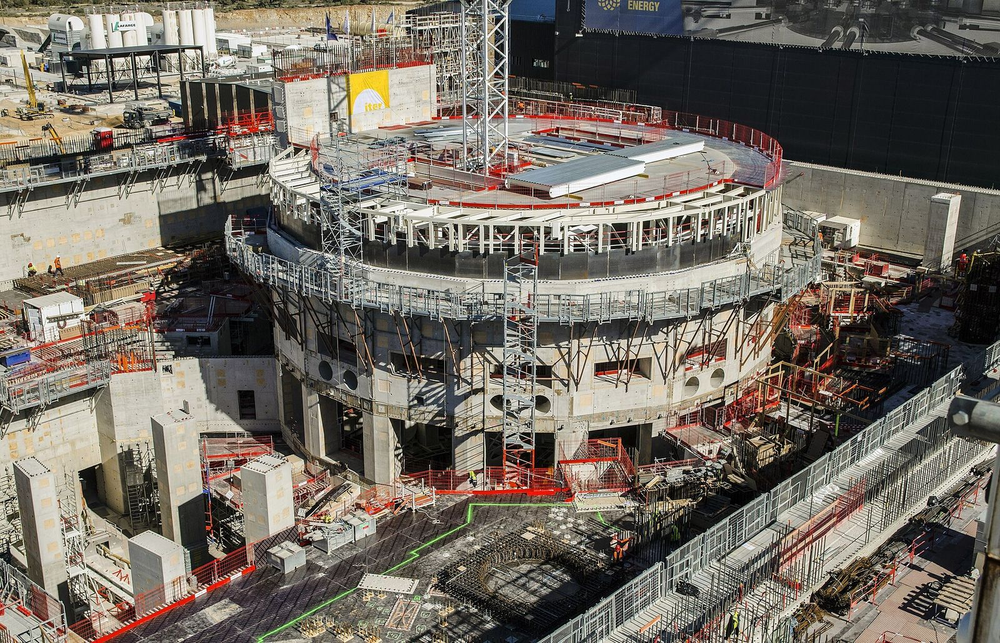

ITER: promise, progress and reality
Why can a news article about ITER be well researched and still give a wrong picture a few years later?
Prior knowledge
- ITER's Members, site and 2024 baselinechapter ITER: why, where and who
- The fusion gain $Q$ and why ITER produces no electricitychapter Inside ITER: the machine and fusion gain
- Mass defect and $E = mc^2$chapter Mass defect and binding energy
Core path: follow the steps in order. Tasks marked Optional give extra practice. Optional tasks: 1.
Think about it
In 2018 Helsingin Sanomat published a large multimedia story about ITER, with pictures from the construction site in France. Yle has reported on ITER since the site was chosen in 2005. Journalists check their facts, interview experts and report the official plans. Eight years later, a student reads the 2018 story for a school report.
Which parts of a well-researched article about ITER can you still trust years later, and which must you check?
Review: where does the energy come from?
Predict
Make your predictions before investigating 2 questions
Prediction 1: what ages fastest?
Prediction 2: what goes out of date?
Investigate
Investigate 1: choose and read an article
Choose one article. They are in Finnish; you read in Finnish and write in English.
- Helsingin Sanomat, 2018: a large multimedia story about ITER, https://dynamic.hs.fi/2018/iter/. Your teacher tells you how to open it (it may need the school's subscription).
- Yle Uutiset, 14 January 2020: Tamperelaisessa teollisuushallissa on kehitetty tekniikkaa, joka voi vielä pelastaa maailman öljykriisiltä ja ydinjätteiltä, about the Finnish research centre VTT in Tampere, which develops robots and tools for maintaining ITER, https://yle.fi/a/3-11146330.
- Yle Uutiset, 28 June 2005 (short): Koeluontoinen fuusioreaktori Ranskaan, the news of the site decision, with reactions, https://yle.fi/a/3-5217376. Good for a comparison, or for a shorter reading.
Reading strategy. First skim: look at the headline, the date, the pictures and who is quoted. Then read for the six points of the writing task and make notes in English. You do not need to understand every word.
Reading notes
While you read, make notes in English under six headings: (1) ITER's purpose, (2) why fusion is difficult, (3) how fusion releases energy, (4) what makes ITER international, (5) dates, costs and the state of construction that the article gives, (6) what the article says about the future, and who says it. Write the article's name and date at the top.
Model answer
The format of good notes, with two headings filled in for Yle, 14 January 2020. Article: Yle Uutiset, 14 January 2020, VTT in Tampere. (1) Purpose: first machine where fusion power can really be tested. (2) Why difficult: plasma about $150$ million $^\circ\text{C}$, magnets at $-269\ ^\circ\text{C}$; radioactivity, so robots do the maintenance. (3)–(6): short notes in the same style, with numbers copied exactly and, for the future, who says it. Your teacher checks your notes against the article you read.
Assess your own answer
Tick the points your own answer already contains.
Review the theory summary.
Investigate 2: result, plan or opinion?
ITER then and now
Facts about a project under construction change. The table compares ITER's own official information in 2018, when Helsingin Sanomat published its large story, with the official information in November 2026.
| Topic | Official in 2018 | Official in November 2026 |
|---|---|---|
| first plasma | 2025 (2016 baseline) | research operation 2034 (2024 baseline) |
| $\text{D–T}$ operation | 2035 | 2039 |
| construction | "halfway" to first plasma (December 2017) | 6 of 9 vessel modules in the pit (July 2026) |
| cost | about €20 billion (2017 estimate) | about €5 billion more for repairs and changes (2024) |
| wall facing the plasma | beryllium | tungsten (decided 2023, part of the 2024 baseline) |
| Members | seven; the UK through Euratom | seven; the UK has left, Switzerland is back through Europe (2026) |
| Director-General | Bernard Bigot | Pietro Barabaschi (since 2022) |

Construction has also moved on elsewhere in the machine: in June 2026 all six modules of the central solenoid were stacked.
Some things have not changed: ITER's scientific goal ($Q = 10$, $500\ \text{MW}$ of fusion power from $50\ \text{MW}$ of heating), the site at Cadarache, the seven Members, and the physics of fusion. An article from 2018 that reported the plan of 2018 was correct at the time; a reader in 2026 must update the dates, the costs and the construction status.
Compare: your article and today
Compare two pieces of information from your article (dates, costs, construction, people or Members) with the table ITER then and now. For each, write one sentence: what the article says, what is true in November 2026, and whether the article was correct when it was written.
Model answer
The Yle article of 2020 expected the Tampere parts to go to France in five to ten years; in 2026 this depends on ITER's new schedule, which moved research operation to 2034, so the estimate was reasonable then but uncertain now. The article named Europe, China, India, Japan, Russia, South Korea and the USA as partners; in 2026 the seven Members are the same, so this is still correct.
Assess your own answer
Tick the points your own answer already contains.
Review the theory summary.
Theory summary
Key idea
Reading about science in the news needs three questions.
- When was it written, and which plan does it report? A date for the future is a plan of its time. Check it against the newest primary source, such as ITER's baseline.
- What kind of claim is it? A result has happened or been measured ("the site was chosen in 2005"). A plan or forecast says what someone intends or expects ("operation will start in …", "100,000 jobs"). An opinion or hope is a judgement ("fusion is the energy of the future"). All three can appear in a good article; the reader must tell them apart.
- Who says it? A researcher who works on the project, an environmental group and a government can all be quoted fairly, but each has its own interests.
The physics behind the story
How fusion releases energy. When light nuclei fuse, the new nucleus is more tightly bound, and the total mass decreases. The missing mass becomes energy, $E = mc^2$. One $\text{D–T}$ reaction releases $17.6\ \text{MeV}$: $3.5\ \text{MeV}$ to the helium nucleus and $14.1\ \text{MeV}$ to the neutron.
Why it is difficult. The nuclei are positively charged and repel each other, so they fuse only when they move very fast: the plasma must be at about $150$ million $^\circ\text{C}$. It must be dense enough and held long enough by magnetic fields, while the walls survive the heat and the neutrons. Tritium is radioactive and rare, so a future plant must breed it from lithium. And a high gain in the plasma is still not electricity: ITER has no turbines.
Word bank
a headline · a source · to quote · according to · to report · a plan · a forecast · a result · an opinion · outdated · up to date · as of (a date) · to update
Sentence starters
- According to the article, …
- The article was written in …, when the official plan was …
- As of November 2026, …
- This is a plan/forecast/opinion, not a result, because …
- My partner's article focuses more on …
Pair discussion: two articles, two angles
Work with a partner who read a different article if possible. Tell each other in English, using the word bank: who wrote it, when, what its angle is (science, Finland, politics, construction) and who is quoted.
Then write three sentences: how are the two articles different, and why?
Model answer
The Yle article of 2005 reports a political decision: the site, the money for France and the reactions of Chirac and Greenpeace. The Yle article of 2020 focuses on Finland's part, the robots developed in Tampere, and quotes one researcher. They are different because they were written for different news: a decision in 2005 and a Finnish success story in 2020.
Assess your own answer
Tick the points your own answer already contains.
Review the theory summary.
Back to your predictions
Compare your predictions with the table ITER then and now. Then answer the opening question in one or two sentences: how can a well-researched article give a wrong picture years later?
Would you change your prediction?
Apply
Writing task: “ITER: promise, progress and reality”
Start in class and finish at home. Write about 300 words in English on the article you read. Cover all six points: (1) ITER's scientific purpose, (2) why fusion is technically difficult, (3) how energy is released in fusion, (4) what makes ITER an international project, (5) how its development has changed over time: compare the article's information with the verified information of November 2026, (6) what the article says about the future of fusion, and who says it. End with your own short evaluation of the article. Use your reading notes and give dates.
Word bank
a burning plasma · fusion gain · to release · mass defect · to repel · confinement · a Member · in kind · a baseline · to postpone · a forecast · a hope · as of November 2026
Sentence starters
- The article, published in … by …, describes …
- ITER's purpose is to …
- Fusion releases energy because …
- It is difficult because …
- ITER is international because …
- When the article was written, the plan was …; as of November 2026, …
- According to …, the future of fusion …
- In my view, the article …
Model answer
Outline: (1) the article, its date and its angle; (2) ITER's purpose; (3) how fusion releases energy; (4) why it is difficult; (5) what makes ITER international; (6) how the project has changed: the article's information against the information of November 2026; (7) what the article says about the future, and your evaluation.
Model text (about 300 words, based on the Yle article of 2020):
In January 2020, Yle reported on VTT's laboratory in Tampere, where Finnish engineers develop robots and tools for maintaining ITER. The article presents ITER as the first machine in which fusion power can really be tested.
ITER's scientific purpose is to create a burning plasma: according to ITER, it should produce $500\ \text{MW}$ of fusion power from $50\ \text{MW}$ of heating, a gain of ten. It will not produce electricity, but it should show that a fusion power plant is possible.
In fusion, light hydrogen nuclei join into helium. The products have less mass than the fuel, and the missing mass becomes energy: one deuterium–tritium reaction releases $17.6\ \text{MeV}$. This is difficult because the positive nuclei repel each other, so the fuel must be heated to about $150$ million degrees and held by superconducting magnets cooled to $-269\ ^\circ\text{C}$. The neutrons also make the machine radioactive, which is why robots from Tampere are needed.
ITER is international because the machine is too large and expensive for one country. Seven Members, among them the EU, China, India and the USA, deliver parts; about twenty Finnish companies have taken part.
The article gives no date for ITER's first plasma. In 2020 the official plan was first plasma in 2025. As of November 2026, ITER's 2024 baseline plans research operation in 2034 and deuterium–tritium operation in 2039, after defects and the pandemic. The researcher's estimate that the Tampere parts would leave in five to ten years also depends on this schedule.
About the future, the article quotes the researcher's hope that fusion is the energy source of the future, and the EU's aim of fusion electricity in the 2050s. These are hopes and plans, not results. In my view the article explains the technology well, but a reader today must update its time scale.
Assess your own answer
Tick the points your own answer already contains.
Review the theory summary.
Find the error
Optional Peer feedback
Swap texts with a partner. Check your partner's text with the seven criteria of the writing task. Write two things that are done well and one concrete suggestion, using the sentence starters.
Word bank
clear · well organised · a dated fact · to add · to explain more
Sentence starters
- You explain … clearly.
- I liked how you …
- You could add …, because …
Model answer
You explain the physics clearly, and I liked how you compared the 2018 plan with the 2024 baseline. You could add who says that fusion is the energy of the future, because it is a researcher's hope, not a result.
Assess your own answer
Tick the points your own answer already contains.
Review the theory summary.
Common misconception
"An old article with a wrong date was bad journalism." If the article reported the official plan of its time, it was correct then; the plan changed later. The reader's job is to notice the date of the article and to check the plan today.
A second mistake is to treat every sentence of an article as the journalist's claim. Many sentences report what someone said: a researcher's hope, an organisation's plan or a critic's opinion. Ask who says so.
Check your understanding
1. Kinds of claims
2. Checking a date
3. The physics in the article
4. A correction note
Write a correction note of two or three sentences that a news site could add today under a 2018 article saying "ITER's first plasma is planned for 2025". Be fair to the journalist and precise about the new plan.
Word bank
a correction · an update · at the time · since then · replaced
Sentence starters
- Update, November 2026: …
- At the time of writing, …
- Since then, …
Model answer
Update, November 2026: At the time of writing, ITER's official plan (the 2016 baseline) foresaw first plasma in 2025. In July 2024 ITER replaced this plan; its new baseline plans the start of research operation in 2034 and deuterium–tritium operation in 2039.
Assess your own answer
Tick the points your own answer already contains.
Review the theory summary.
Summary
- Official information on ITER changed between 2018 and 2026: first plasma 2025 → research operation 2034; $\text{D–T}$ 2035 → 2039; costs and the construction status changed too.
- The goal ($Q = 10$), the site, the seven Members and the physics did not change.
- Read news about science by asking when it was written, what kind of claim each statement is (result, plan, opinion) and who says it.
- Fusion releases energy because the mass decreases ($E = mc^2$); it is difficult because of the Coulomb repulsion, the extreme temperature, confinement, materials and tritium.
Le coin français
French newspapers such as Le Monde or the regional La Provence also report on ITER. These phrases help you to talk about an article. Listen, repeat, and say the last sentence to your partner.